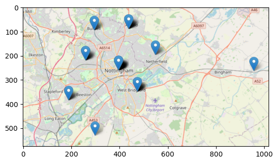
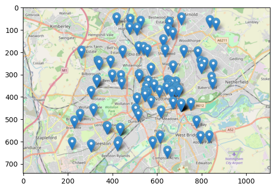

import numpy as np
import pandas as pd
import matplotlib.pyplot as plt
import matplotlib.image as mpimg
import folium
import pgeocodeGeocoding Postcodes in Python: pgeocode v ONS
Python
Pandas
folium
Emmanuel House
I explain a problem encountered in voluntary work undertaken for Emmanuel House Support Centre in Nottingham related to encoding postcodes as coordinates, and the solution found.
As part of my voluntary work for Emmanuel House, a Nottingham charity providing support and shelter for the homeless and vulnerably housed, I undertook a project studying the geographic distribution of individual donors to the charity across the UK.
In this post I illustrate an issue I encountered while attempting to encode the postcodes of individual donors as latitude and longitude pairs, and the solution.
The goal of encoding the postcodes was to produce visualisations showing how donors are distributed across Nottingham. This allowed us to gain insight into which areas/demographics should be targeted by marketing campaigns, and which social groups are underrepresented in Emmanuel House’s donor database.
df = pd.read_csv('files/nottm_postcodes.csv')nottm_postcodes.csv is a file I constructed consisting of 100 random postcodes within Nottingham city.
Importantly, these are not postcodes of real donors to the charity. Sharing such information online would violate GDPR. These postcodes are randomly selected from publicly available datasets
df.head(10)| Postcode | |
|---|---|
| 0 | NG9 3WF |
| 1 | NG9 4WP |
| 2 | NG9 3EL |
| 3 | NG1 9FH |
| 4 | NG5 6QZ |
| 5 | NG7 5QL |
| 6 | NG7 2FT |
| 7 | NG4 1PY |
| 8 | NG8 3SL |
| 9 | NG9 4AX |
df.info()<class 'pandas.core.frame.DataFrame'>
RangeIndex: 100 entries, 0 to 99
Data columns (total 1 columns):
# Column Non-Null Count Dtype
--- ------ -------------- -----
0 Postcode 100 non-null object
dtypes: object(1)
memory usage: 928.0+ bytesdf.nunique()Postcode 100
dtype: int64postcodes = df['Postcode'].to_list()Geocoding with pgeocode
I first attempted to geocode the postcodes using pgeocode, a lightweight Python library for geocoding postcodes and distance calculations.
nomi = pgeocode.Nominatim('gb')print('Querying postcode:', df.iloc[0]['Postcode'])
nomi.query_postal_code(df.iloc[0]['Postcode'])Querying postcode: NG9 3WFpostal_code NG9
country_code GB
place_name Bramcote, Beeston, Toton, Stapleford, Attenbor...
state_name England
state_code ENG
county_name Nottinghamshire
county_code 11609044
community_name NaN
community_code NaN
latitude 52.91914
longitude -1.24548
accuracy 4.0
Name: 0, dtype: objectnomi.query_postal_code(postcodes)[['latitude','longitude']].head()| latitude | longitude | |
|---|---|---|
| 0 | 52.91914 | -1.24548 |
| 1 | 52.91914 | -1.24548 |
| 2 | 52.91914 | -1.24548 |
| 3 | 52.95360 | -1.15050 |
| 4 | 53.00060 | -1.13150 |
df[['Latitude','Longitude']] = nomi.query_postal_code(postcodes)[['latitude','longitude']]df.head()| Postcode | Latitude | Longitude | |
|---|---|---|---|
| 0 | NG9 3WF | 52.91914 | -1.24548 |
| 1 | NG9 4WP | 52.91914 | -1.24548 |
| 2 | NG9 3EL | 52.91914 | -1.24548 |
| 3 | NG1 9FH | 52.95360 | -1.15050 |
| 4 | NG5 6QZ | 53.00060 | -1.13150 |
At a first glance it seems that pgeocode has provided an elegent solution to the problem in only a few lines of fast-running code. However upon closer inspection:
df[['Latitude','Longitude']].value_counts()Latitude Longitude
52.953600 -1.150500 42
52.929150 -1.114850 13
52.964800 -1.213200 12
52.919140 -1.245480 11
53.000600 -1.131500 10
52.998900 -1.197100 5
52.970960 -1.081000 3
52.878620 -1.195240 2
52.903579 -1.044274 1
52.952566 -0.894169 1
Name: count, dtype: int64df[['Latitude','Longitude']].nunique()Latitude 10
Longitude 10
dtype: int64Despite df containing 100 unique postcodes, pgeocode has only encoded these into 10 different latitude, longitude pairs.
Whats worse is that 42(!!) distinct postcodes were each encoded into (52.953600, -1.150500).
We can judge this approach by contructing a visualisation in the form as an interactive .html map using Folium:
pgeocode_map = folium.Map(location=[52.9548, -1.1581], zoom_start=13)
for index, row in df.iterrows():
folium.Marker(
location=[row['Latitude'], row['Longitude']],
).add_to(pgeocode_map)
pgeocode_map.save('pgeocode_map.html')
pgeocode_mapMake this Notebook Trusted to load map: File -> Trust Notebook
Taking a screenshot of this map and displaying using matplotlib:
img = mpimg.imread('pgeocode_map.png')
imgplot = plt.imshow(img)
plt.show()
It indeed seems that pgeocode has encoded the postcodes with a less than desirable accuracy, resulting in large numbers of distinct postcodes being sent to the same point on the map.
df = df.drop(['Latitude', 'Longitude'], axis=1)Geocoding with ONS data
Upon suggestion from a friend I proceeded to directly encode the postcodes by downloading data from the Office for National Statistics (ONS) instead of relying on a Python library.
This had the advantage of resulting in a far more accurate geocoding, but had the disadvantage of being more computationally expensive.
post = pd.read_csv(r'C:\Users\Daniel\Downloads\open_postcode_geo.csv\open_postcode_geo.csv', header=None)
post = post[[0, 7, 8]]
post = post.rename({0: 'Postcode', 7: 'Latitude', 8: 'Longitude'}, axis=1)
post.sample(5)| Postcode | Latitude | Longitude | |
|---|---|---|---|
| 717388 | EC4A 2LE | 51.513622 | -0.112106 |
| 1402379 | MK40 2LE | 52.144992 | -0.462139 |
| 1094844 | KT1 3QG | 51.407402 | -0.280400 |
| 1612623 | NR29 4RQ | 52.702233 | 1.623660 |
| 2294608 | TA20 4DN | 50.868756 | -2.933350 |
open_postcode_geo.csv can be downloaded from https://www.data.gov.uk/dataset/091feb1c-aea6-45c9-82bf-768a15c65307/open-postcode-geo and is contructed from data made publicly available by the ONS.
open_postcode_geo.csv consists of over 2.6 million UK postcodes, along with their latitudes and longitudes. Other information about the postcodes is also included which is irrelevant for the purposes of this post.
Because of the length of the dataset the code cells in this section take some time to run.
len(post)2631536We can now geocode the postcodes in df by joining the corresponding Latitude and Longitude from post:
df = df.merge(post, on='Postcode', how='left')
df.head()| Postcode | Latitude | Longitude | |
|---|---|---|---|
| 0 | NG9 3WF | 52.930121 | -1.198353 |
| 1 | NG9 4WP | 52.921587 | -1.247504 |
| 2 | NG9 3EL | 52.938985 | -1.239510 |
| 3 | NG1 9FH | 52.955008 | -1.141045 |
| 4 | NG5 6QZ | 52.996670 | -1.106307 |
df[['Latitude', 'Longitude']].value_counts()Latitude Longitude
52.945107 -1.135586 8
52.955008 -1.141045 4
52.930121 -1.198353 3
52.955053 -1.141030 2
52.959917 -1.222127 2
..
52.953058 -1.144924 1
52.952972 -1.228161 1
52.952828 -1.145360 1
52.952059 -1.170039 1
52.998288 -1.135252 1
Name: count, Length: 85, dtype: int64df[['Latitude','Longitude']].nunique()Latitude 85
Longitude 85
dtype: int64This solution has resulted in 85 unique latitude, longitude pairs. A significant improvement over the results from pgeocode.
Producing another visualisation using Folium:
ons_map = folium.Map(location=[52.9548, -1.1581], zoom_start=13)
for index, row in df.iterrows():
folium.Marker(
location=[row['Latitude'], row['Longitude']],
).add_to(ons_map)
ons_map.save('ons_map.html')
ons_mapMake this Notebook Trusted to load map: File -> Trust Notebook
Taking a screenshot of the map using ShareX and displaying using matplotlib:
img = mpimg.imread('ons_map.png')
imgplot = plt.imshow(img)
plt.show()
This looks significantly more realistic than the map produced using pgeocode to geocode.